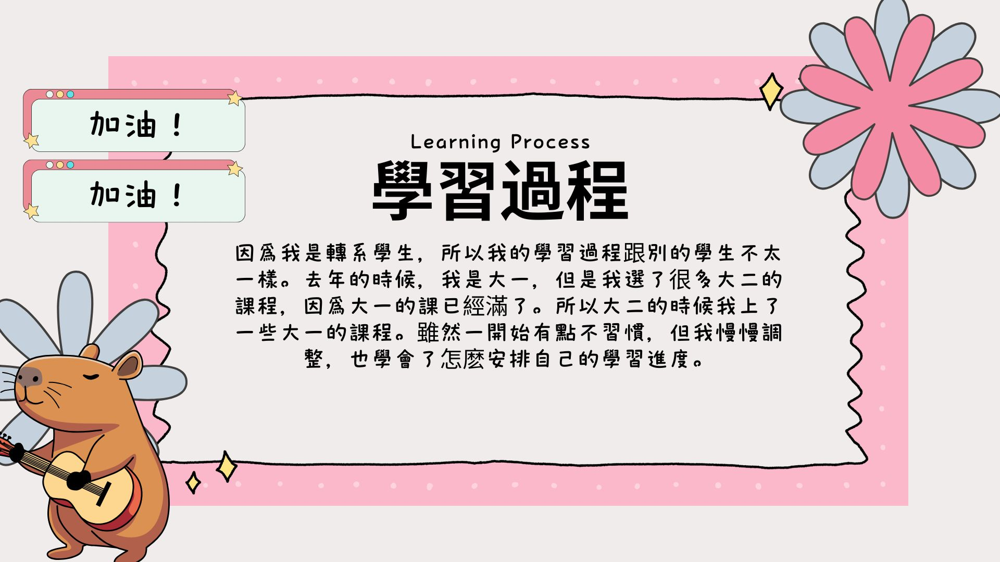

因為我是轉系學生，所以我的學習過程跟其他的學生不太一樣。去年的時候，我是大一，但是我選了很多大二的課程，因為大一的課已經滿了。所以到了大二的時候，我反而修了一些大一的課程。雖然一開始有點不習慣，但我慢慢地調整，也學會了怎麽安排自己的學習進度。
Because I am a transfer student, my learning process is a bit different from other students. Last year, I was a freshman, but I took many sophomore-level courses because the freshman classes were already full. So when I became a sophomore, I ended up taking some freshman-level courses instead. Although it was a bit difficult to get used to at first, I gradually adjusted and learned how to manage my study schedule.
| Chinese (中文) | English (英文) |
|---|---|
| 因為我是轉系學生 | Because I am a transfer student |
| 所以我的學習過程跟其他的學生不太一樣 | so my learning process is a bit different from other students |
| 去年的時候，我是大一 | Last year, I was a freshman |
| 但是我選了很多大二的課程 | But I took many sophomore (Year 2) courses |
| 因為大一的課已經滿了 | Because the freshman courses were already full |
| 所以到了大二的時候 | So when I became a sophomore |
| 我反而修了一些大一的課程 | I ended up taking some freshman-level courses instead |
| 雖然一開始有點不習慣 | Although it was a bit difficult to get used to at first |
| 但我慢慢調整 | But I slowly adjusted |
| 也學會了怎麽安排自己的學習進度 | Also learned how to arrange my own study progress |
Vocabulary List(生詞表)
| Chinese Character (漢字) | Pinyin (拼音) | English (英文) |
|---|---|---|
| 因為...所以 | yīnwèi... suǒyǐ | Because... therefore/so |
| 轉系 | zhuǎn xì | To transfer departments (change major) |
| 學習 | xuéxí | Learning |
| 過程 | guòchéng | process |
| 跟其他的學生 | gēnqítā de xuéshēng | Compared to/with other students |
| 不太一樣 | bútài yīyàng | Not quite the same / Different |
| 去年時候 | qùnián shíhòu | Last year / During last year |
| 大一 | dàyī | Freshman (1st year university student) |
| 但是 | dànshì | But / However |
| 選 | xuǎn | Pick |
| 很多 | hěnduō | many |
| 大二 | dà'èr | Sophomore (2nd year) |
| 課程 | kèchéng | courses |
| 已經 | yǐjīng | already |
| 滿 | mǎn | Full |
| 到了 | dàole | When (it comes to) |
| 反而 | fǎn ér | Instead |
| 修了 | xiū le | Took / enrolled in |
| 一些 | yīxiē | Some |
| 雖然 | suīrán | Although |
| 一開始 | kāishǐ | At first |
| 有點 | yǒudiǎn | A bit |
| 不習慣 | bù xíguàn | Not used to it |
| 慢慢 | mànman | Slowly |
| 調整 | tiáozhěng | Adjusting |
| 怎麼 | zěnme | How |
| 安排 | ānpái | arrange |
| 自己 | zìjǐ | my own |
| 進度 | jìndù | progress |